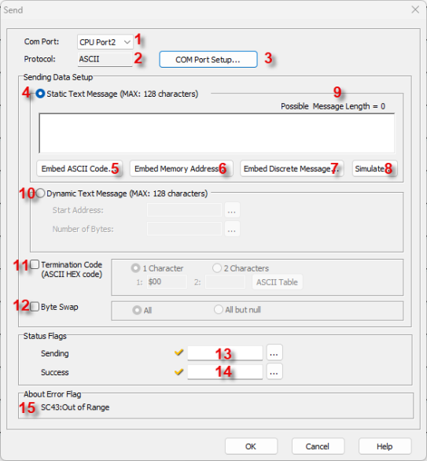
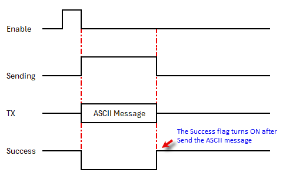

Topic: CL183

| Send Instruction: ASCII |
Topic: CL183
|
The Send instruction allows you to send ASCII text messages to external devices such as a serial printer or a text message display. The CLICK CPU modules support the MODBUS (RTU) and ASCII protocols. This help topic covers the ASCII protocol. To use the MODBUS (RTU) protocol, please refer to the help topic Send Instruction: MODBUS.
|
|
Note: For the Com Port wiring info, please refer to the CLICK PLC Hardware Manual or CLICK PLUS PLC Hardware Manual. |
|

1 Com Port: Click the down arrow to select a Port from the available list.
2 Protocol: This field displays the Protocol currently selected. If it is not ASCII, see Item 3 to change the Protocol Type.
3 COM Port Setup: Click on this button to open the Com Port Setup window shown below. From this window click on the down arrow for the Protocol field and select ASCII or MODBUS.

|
|
Note: If the Protocol parameter is grayed out, it means there is at least one Receive or Send instruction assigned to the Com Port already. If you still want to change the Protocol, please delete those Receive/Send instructions first. |
|
4 Static Text Message (Max: 128 Characters): From this field, you can compose the ASCII Text Message to be sent to the external device. You can mix Text Messages, ASCII Codes and Memory Addresses in the ASCII Text Message. This field allows up to a 128 character message.
Example:

5 Embedded ASCII Code: Click this button to open a dialog used to select an ASCII Code (00h to FFh). You can select an ASCII Code to embed in the ASCII Text Message. Please refer to the help topic ASCII Table for details.
6 Embedded Memory Address: Click this button to open a dialog used to enter a Data Register Memory Address and select the format. Please refer to the help topic Embedded Address for details.
7 Embedded Discrete Address: Click this button to open a dialog used to enter a Discrete Memory Address and select the format. Please refer to the help topic Embedded Address for details.
8 Simulate: Click this button to open a dialog used to enter values to Simulate the Data in the Memory Addresses you Embedded in the ASCII Text Message. Please refer to the help topic Static Message Simulate for details.
9 Possible Message Length: The CLICK Software automatically calculates the Possible Message Length and displays it here.
10 Dynamic Text Message (Max:
128 Characters): Select Dynamic
Text Message to Send
a Message stored in
a series of Text Addresses.
Select the Text Address
and the Number of Bytes
using the Start Address
and the Number of Bytes Browse
Icon respectively.
respectively.
11 Termination Code: Click on the checkbox to select. The Termination Code fields for 1 Character and 2 Character become active. Select the number of Characters to use and enter the ASCII Code in the field(s). Click on the ASCII Table button to open the ASCII Table shown below. Use this table to quickly select the desired ASCII Code.

12 Byte Swap: Select the checkbox if Byte Swap will be used. If selected, the ALL and All But Null selections will become active. Click one of these methods to select it.

13 Sending: Assign a C Bit as the Sending flag. This flag turns ON when the com port is Sending an ASCII message to the external device. Please refer to the Timing Chart below.
14 Success: Assign a C Bit as the Success flag. This flag turns ON after the com port Sent an ASCII message to the external device. The Send instruction just Sends the ASCII message to the external device and there is no way for the CLICK PLC to check if the external device Received the ASCII message successfully. This flag always turns ON after Sending and ASCII message. This flag turns OFF when the Enable input for this instruction is Enabled again. Please refer to the Timing Chart below.
15 Error Flag: SC43:Out of Range is the PLC error code if any numeric value is out of the corresponding data types range.
